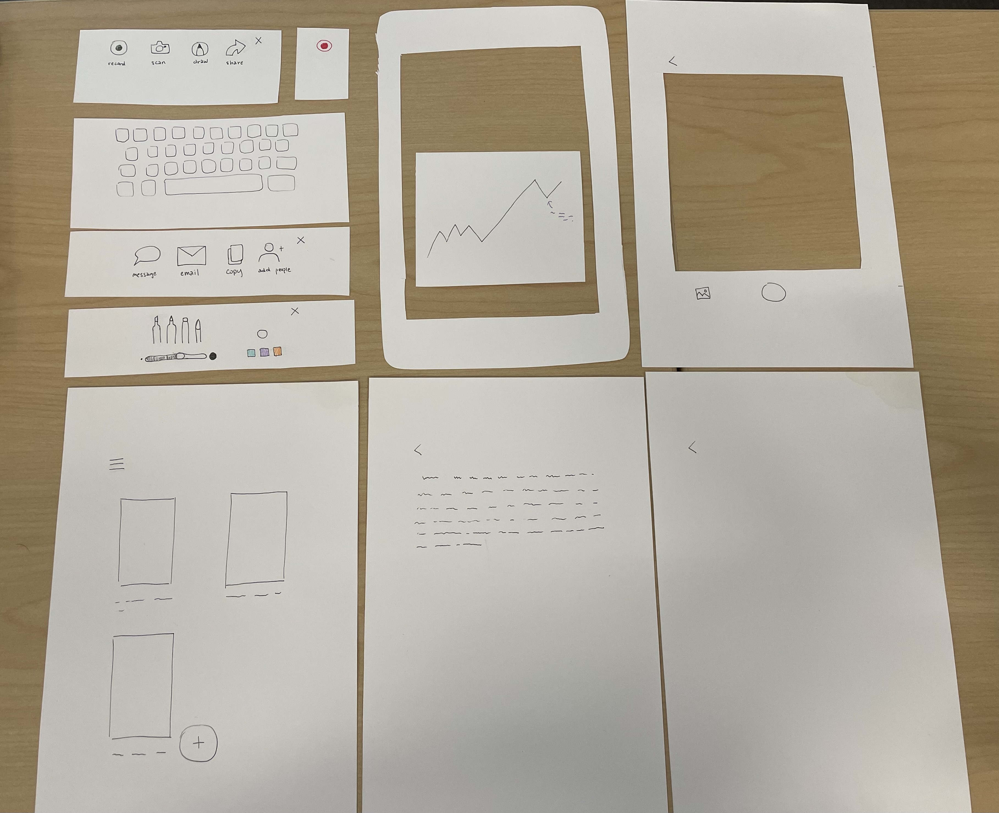

Paper Prototyping
Last Modified: 2021/10/14 Ayaka Ishide
This is a paper prototype of a note taking app. Paper prototyping can be a great tool to use for user testing as it is cheap and easy to make, so making changes can be done relatively fast to make the next iteration to test. This app prototype was done for my MI 420 Interactive Prototyping class, but in the future I would like to develop it into a higher fidelity prototype using web-based tools. The idea of this app came from my own personal experience with taking notes in class, as I oftentimes could not keep up with the lecturer while I was taking notes as they would go too fast. This app has a feature in which you can record audio and the app will transcribe it in real-time, as well being able to edit the text simultaneously. There is also a scanning feature that will scan pictures or text onto the document. I feel that this app will be something I will actually use if it were to be made, so I would like to keep designing it. It will be interesting to see the development of the app design and how other people will react to the app.
| Feature Button | Description | What the user sees after clicking this button |
|---|---|---|
| Record | Transcribes real-time as app records audio | Button turns red, app starts trascribing |
| Scan | Takes a picture and scans it into document | User is taken to a camera screen to take a picture |
| Annotate | Allows user to draw/write/highlight on document | A subscreen pops up of different annotating utensils |